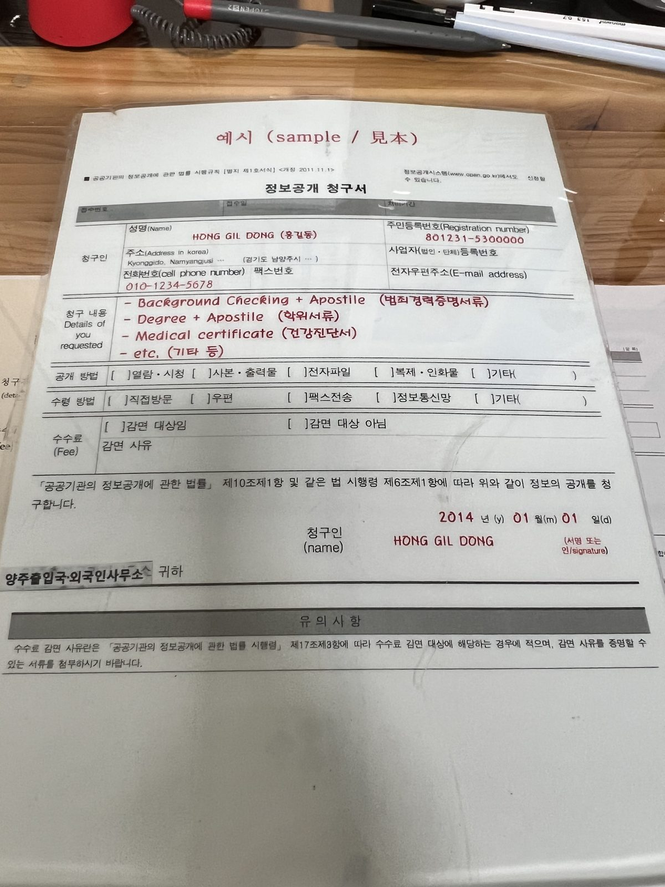
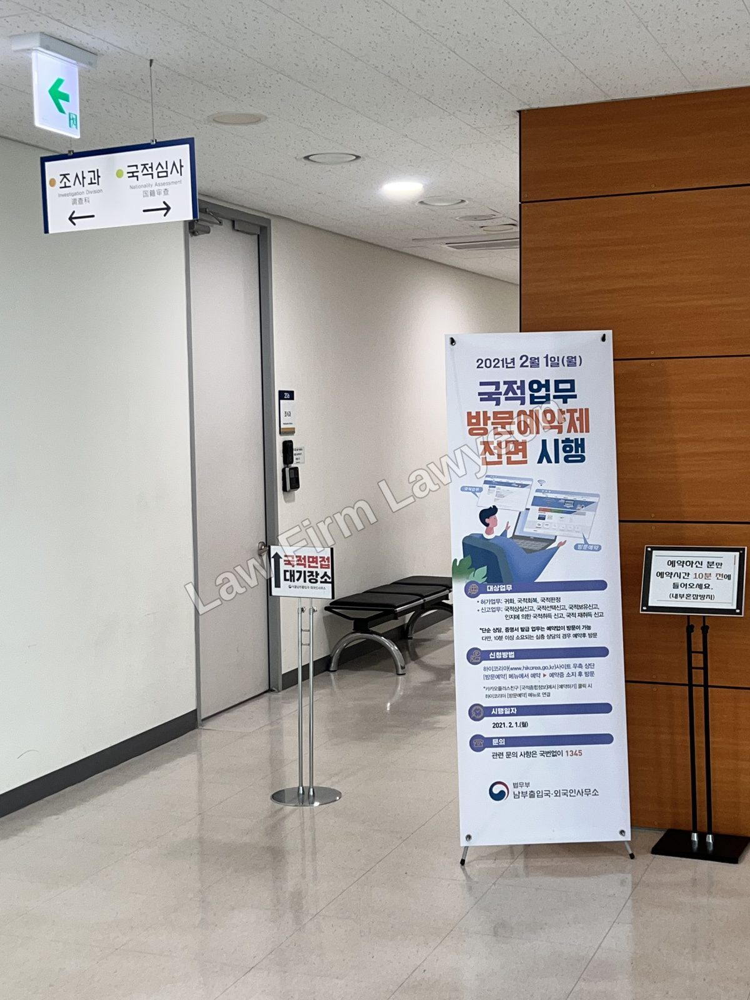

연장·변경 불허는 곧바로 출국을 의미하지 않습니다. 보완 후 재신청으로 해결되는 사안이 있고, 처분 자체를 다투는 불복으로 가야 하는 사안이 있습니다. 그리고 국내에서 받은 불허 처분은 행정심판·취소소송으로 다툴 수 있습니다. 어느 쪽인지는 불허 사유에 따라 달라집니다.

가장 먼저: 남은 기한 확인
불허 통지를 받으면 통지서에 적힌 출국 기한 또는 남은 체류기간부터 확인합니다. 그 날짜가 재신청·불복·출국 선택의 마감 기준입니다.
기한을 넘기면 불법체류가 됩니다. 그때부터는 연장의 문제가 아니라 강제출국의 문제가 되며, 이후 신청에서 '기한 도과' 기록이 불리하게 작용합니다.
불허 사유를 먼저 확인해야 하는 이유
불허 통지서의 사유는 대개 "체류 요건 미비"처럼 한 줄로 적혀 있습니다. 이 한 줄만 보고 같은 서류로 다시 신청하면 같은 결과가 나오고, '동일 사유 반복 신청' 기록이 추가됩니다.
따라서 사유 확인이 먼저입니다. 처분청에 구체적 사유를 확인하거나 정보공개 청구로 심사 기록을 확보합니다. 사유는 크게 둘로 나뉩니다.
- 요건의 문제 — 소득·고용·서류가 기준에 미치지 못한 경우. 보완하면 재신청으로 해결됩니다.
- 이력의 문제 — 벌금·범칙금·위반 이력이 심사에 반영된 경우. 보완할 서류가 없으므로 불복으로 다툽니다.
이력 기준: 외국인 벌금형 기준 · 범칙금 체류 제한 기준
재신청으로 해결되는 사안
요건 미달이 사유라면 보강해 다시 제출하는 것이 가장 빠릅니다. 소득 증빙 보완, 고용계약 조건 정비, 누락 서류 제출 등입니다.
다만 심사관은 이전 신청 기록을 함께 봅니다. 지난번과 같은 서류나 지난번과 모순되는 진술은 감점 요인입니다. 무엇이 부족했는지 확인하고, 이전 기록과 어긋나지 않게 구성한 뒤 제출해야 합니다.
기한이 임박해 보완할 시간이 부족하면 출국 기한 연장 등으로 시간을 먼저 확보합니다.
불복으로 다퉈야 하는 사안
이력이 사유이거나, 요건을 갖췄는데도 불허된 경우에는 재신청만으로 해결되지 않습니다. 처분 자체를 다툽니다.
경로는 행정심판 또는 취소소송입니다. 취소소송은 처분을 안 날부터 90일 이내에 제기해야 합니다. 소송 중 출국 기한이 도래하면 집행정지 등 보전 조치를 함께 검토합니다.
불복 심사·재판의 핵심 쟁점은 "불허 처분이 해당 외국인의 사정에 비추어 과도한가"입니다. "요건을 갖췄다"는 주장만으로는 부족하고, 한국에서의 가족관계·정착 기간·위반 경위를 자료로 연결해, 불허로 잃는 이익이 지나치게 크다는 점을 입증해야 합니다.
| 판단 요소 | 유리한 사정 | 불리한 사정 |
|---|---|---|
| 정착 | 장기 체류, 안정된 직장·소득 | 짧은 체류, 잦은 자격 변경 |
| 가족 | 한국인 배우자, 양육 중인 자녀 | 국내 연고 없음 |
| 이력 | 단순·일회성 위반, 경위 소명 | 반복 위반, 누적 벌금·범칙금 |
| 태도 | 일관된 진술, 성실한 자료 제출 | 모순 진술, 기한 도과 |
국내 불허 처분은 소송 대상입니다 — 사증 거부와 다릅니다
두 가지를 구분해야 합니다.
해외 대사관·영사관에서 받은 사증(비자) 발급 거부는, 대법원 판례상 외국인이 소송으로 다툴 수 없습니다(원고적격 부정).
반면 국내에서 받은 처분 — 체류기간 연장 불허, 자격 변경 불허, 출국명령, 강제퇴거 — 은 행정심판·취소소송으로 다툴 수 있습니다.
"비자 문제는 소송이 안 된다"는 설명은 해외 사증 거부에만 해당합니다. 국내에서 받은 불허 처분이라면 불복 경로가 열려 있습니다.

자주 묻는 질문
본 글은 일반적 법률정보이며 개별 사건에 대한 자문이 아닙니다. 처분의 성격과 불복 가능성은 사안에 따라 다르므로, 본인 상황에 맞는 판단은 상담을 통해 확인하시기 바랍니다.